The Independent and Open Science Research Network
A global research network breaking barriers of geography and funding. We connect driven scientists with tools, mentorship, and collaborators to produce world-class research — regardless of institutional affiliation.
// TALENT IS EQUALLY DISTRIBUTED. OPPORTUNITY IS NOT.
The traditional academic system is exclusionary by design. RICAI was built to change that — giving every researcher access to the network, skills, and mentorship that elite institutions take for granted.
Read our storyKnowledge is a public good. We share methods, data, and results openly — accelerating discovery for everyone, everywhere.
No central institution controls who participates. Researchers from any country can lead projects and publish.
Access to the "hidden curriculum" — scholarships, international mobility strategies, and publishing guidance.
Zero fees for authors, zero paywalls for readers. Rigorous peer review, independent of commercial publishers.
Restructuring 513 cyanobacterial genomes using OGRIs to resolve widespread polyphyly — potentially describing 4+ new families and 60+ novel species.
Mapping underexplored microbial species in Latin American environments against global databases to reveal untapped biotechnological horizons.
Systematic review of CBD pharmacology and neuromodulatory mechanisms within the context of substance use disorder treatment.
New members, project milestones, and open science news from the network.
The collaboration call for the genome-based restructuring of Chroococcales is now live. Apply through the official form.
We welcome our newest members expanding RICAI's expertise in environmental microbiology, plant physiology, and immunology.
We are building a zero-fee, zero-paywall publishing platform. Interested in the editorial board? Reach out directly.
RICAI joins forces with Fellowship Hunter to provide expert advisory services for funded PhD positions, postdocs, and research fellowships across Latin America.
Follow @fellowshiphunter →Researchers from 12+ countries, united by the conviction that talent is global and science should be too.

Specialist in bioinformatics and microbial biotechnology integrating high-throughput sequencing with ecological modeling. Currently at UNIPD, Italy, completing a Master's at UNESP, Brazil.

Agronomist and PhD candidate at UNESP in Data Science and postharvest physiology. Applies NIR spectroscopy and machine learning to predict fruit quality and optimize harvest timing.

Ph.D. candidate at Rutgers Medical School in translational immunology. ASM Future Leaders Fellow 2026. Studies innate immune regulation using single-cell transcriptomics and CRISPR systems.

Biologist (Univ. of Caldas), GEBIOME. Molecular biology and epidemiology within the One Health framework.

Biologist and Master's student at UPRM integrating bioremediation and nanotechnology in biochemical microbiological analysis.

Doctoral candidate at UNESP investigating personalized probiotic therapy and microbiota modulation.

Microbiologist specializing in biotechnology and DNA extraction via iron nanoparticles. Research on Utricularia gibba.

Master's candidate at UNESP/FCAV in Supply Chain Management and agribusiness marketing strategy.

Doctoral researcher at CAUNESP with trajectory across 5 countries, specializing in aquatic microbiology.

Microbiologist with applied research experience in agricultural and biotechnology sectors.

Agricultural Engineer and Doctoral Researcher at UFPB, specializing in post-harvest biochemistry and physiology.

PhD candidate at UNESP and CBGP collaborator integrating bioinformatics with molecular bioprospecting for plant growth promotion.
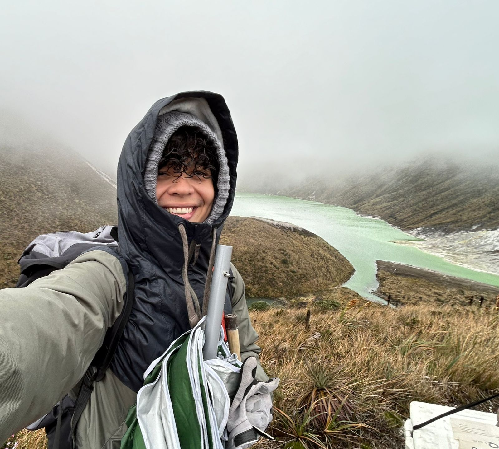
Microbiologist in environmental microbiology and microbial ecology with structural bioinformatics approaches.

Professor at Univ. Técnica de Machala. Research on induced systemic resistance, abiotic stress, and agronomic biofortification.
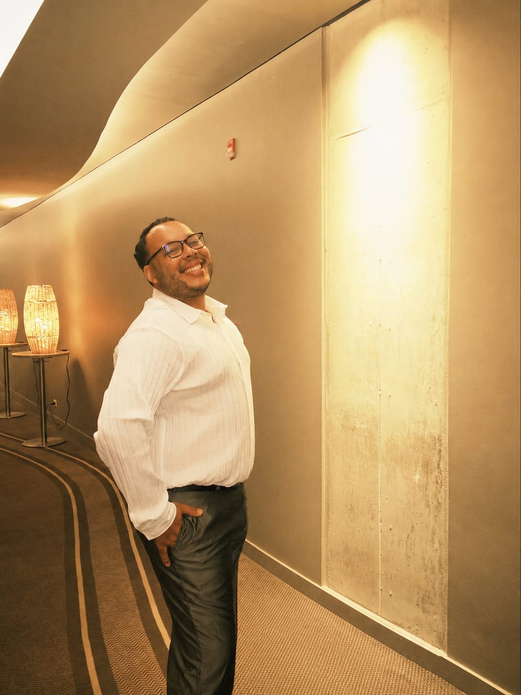
Microbiology researcher (Univ. Libre de Colombia) in scientific writing, clinical immunology, and translational research.
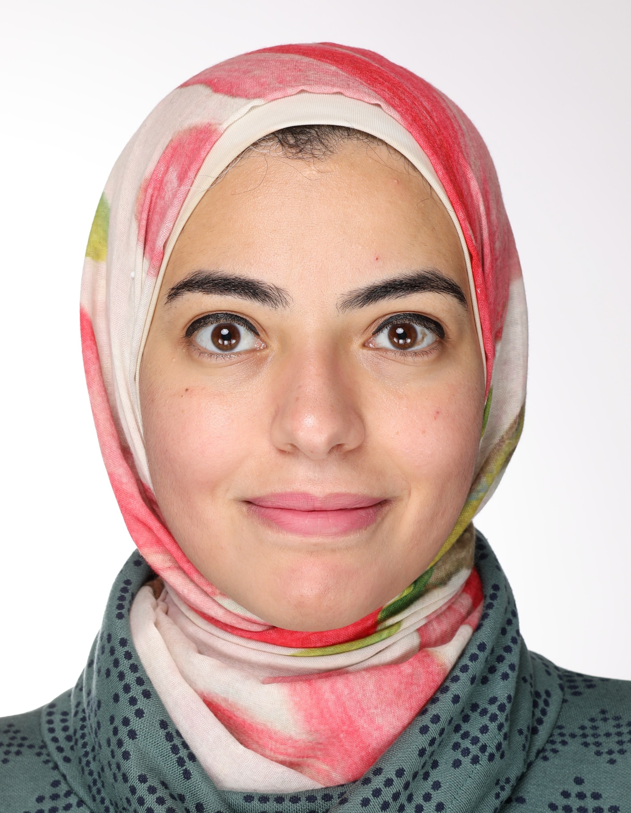
Associate Professor at Cairo University and former postdoctoral researcher at Münster and Cologne. Specializes in molecular cancer biology, 3D long-term organoid models, and tissue restoration.
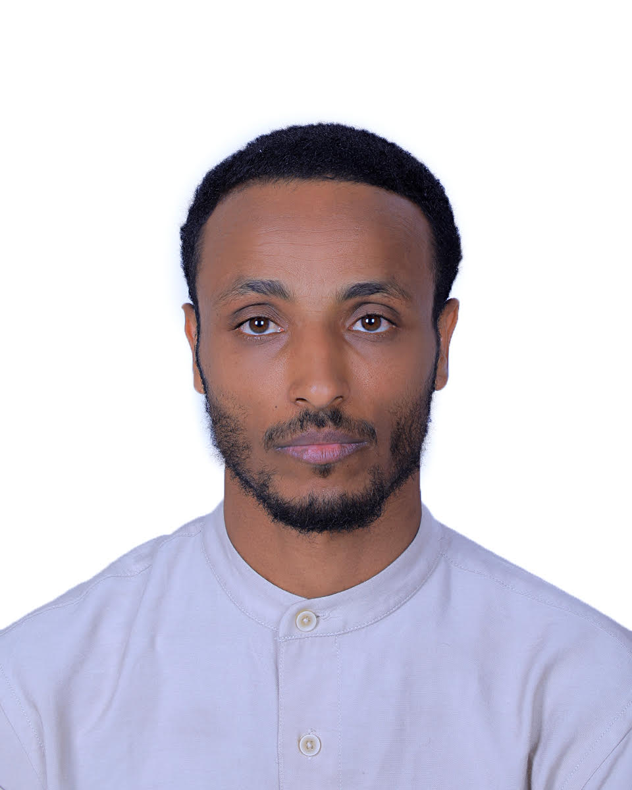
Assistant Professor at Wollo University with a PhD from Sunway University. Focuses on sustainable destination development, heritage conservation, visitor experiences, and creative social research methods.
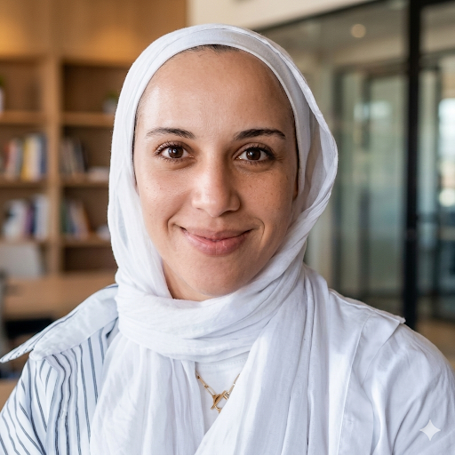
Assistant Lecturer at Ain Shams University and Doctoral Researcher at the Technical University of Munich. Specializes in urban design, informal settlements, smart cities, and AI serious games.
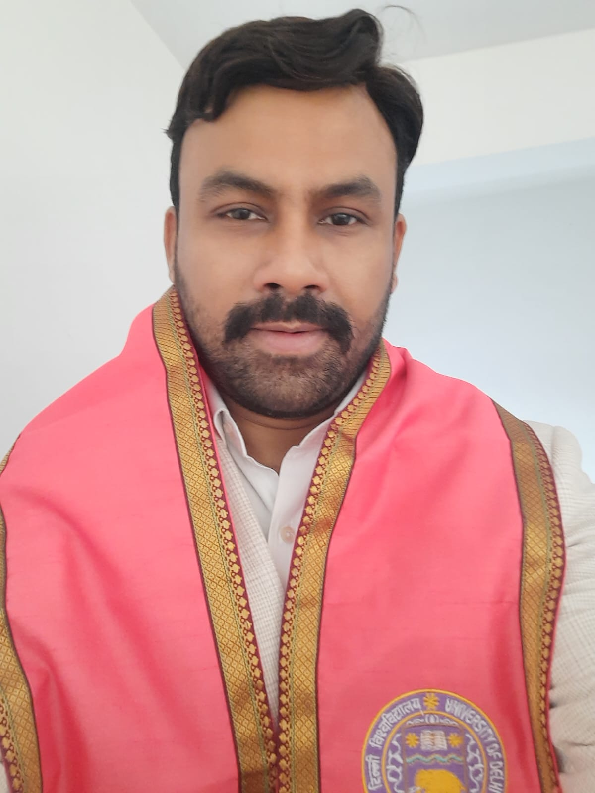
Associate Professor at Divya Jyoti Ayurvedic Medical College. PhD from AIIA, University of Delhi. Specializes in alternative medicine, clinical trials, sleep health, and integrative physiological research.
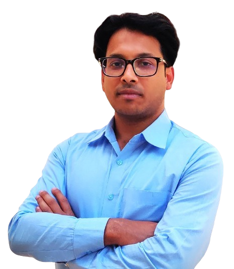
Assistant Professor at Assam Don Bosco University. PhD in Chemical Biology from IIT Kanpur. Focuses on peptide engineering, biomaterials synthesis, and next-generation translational therapeutics.
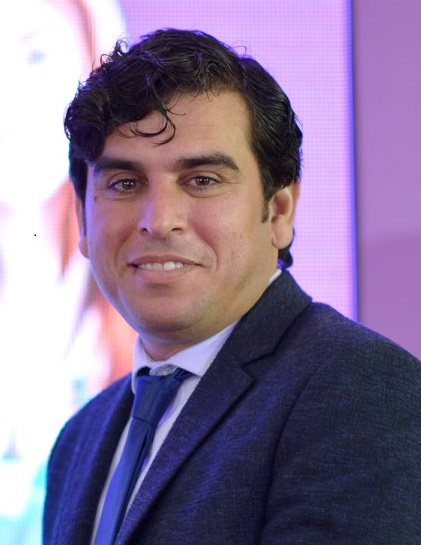
Professor at KMU. Dentist with a PhD from the University of Glasgow, UK. Focuses on interdisciplinary curriculum design and the role of the microbiome in oral and systemic chronic pathology.
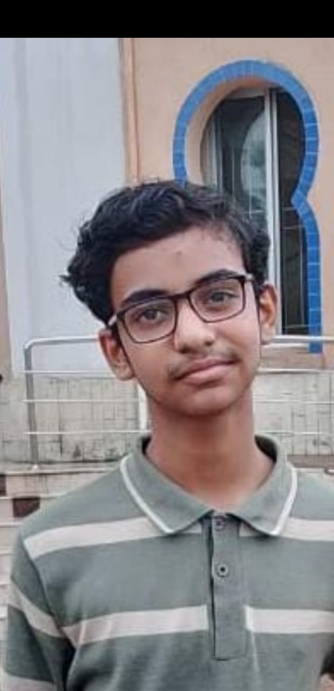
Student researcher and policy analyst at The Science School. Conducts interdisciplinary studies across AI deployment governance, algorithmic diplomacy, and climate mitigation metrics.
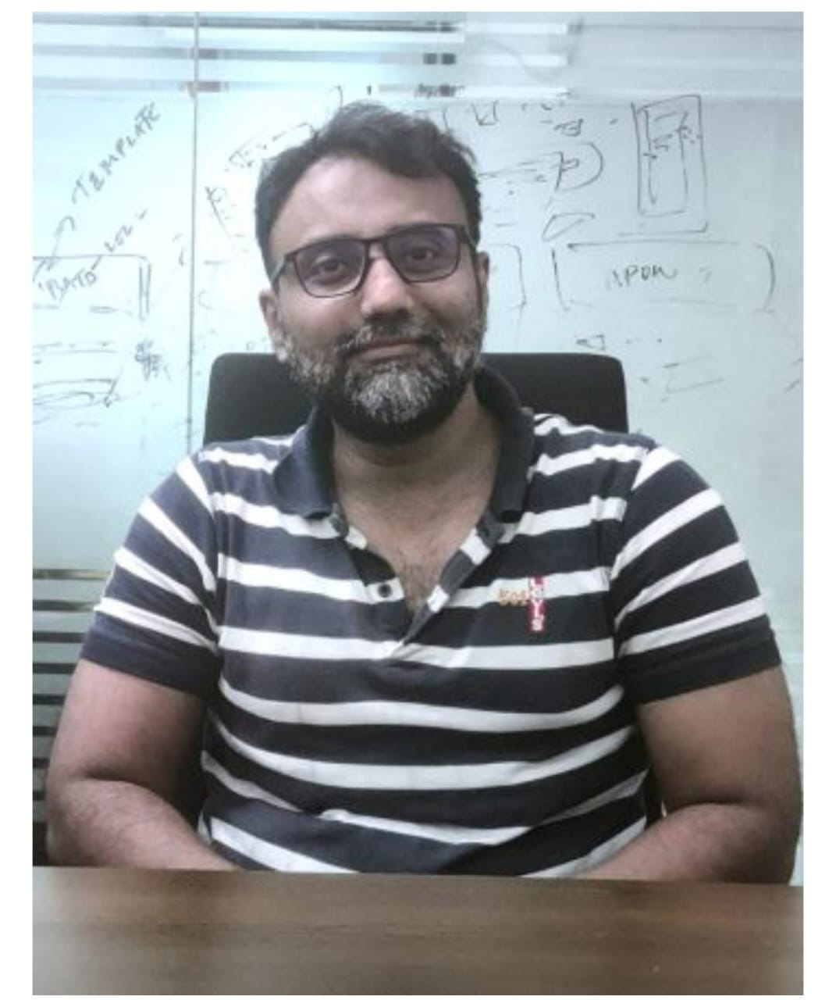
Affiliate researcher at NSU and former adviser at the Canadian High Commission. Specializes in South Asian geopolitics, developmental multialignment statecraft, and water conflict resolution frameworks.
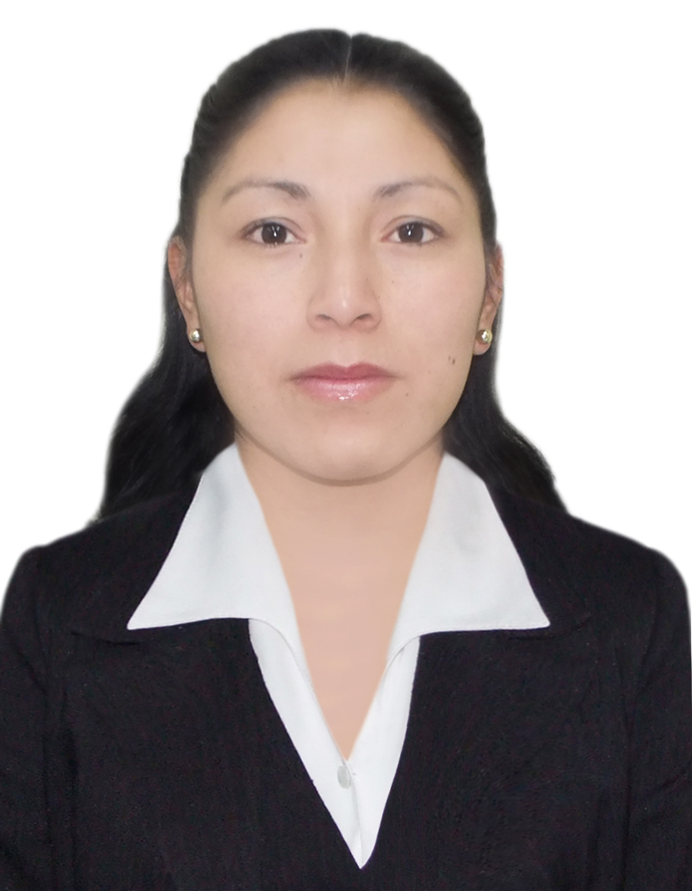
Agronomist and Doctoral Researcher at UNESP. Vice President of FAO-LATSOLAN. Specializes in soil science, agricultural microbiology, and functional indicators of soil health microbiomes.
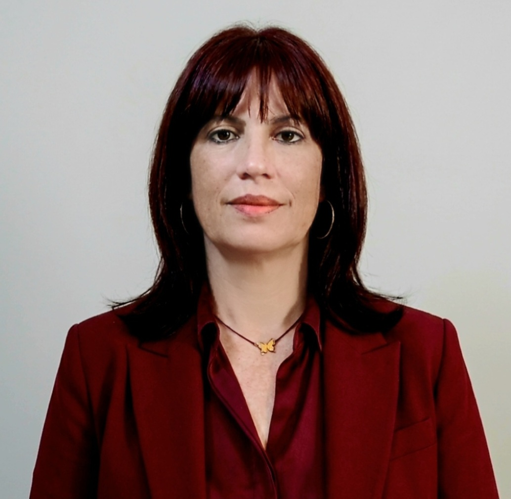
Professor and Vice-Dean at UNISS. PhD from UNESP. Expert in plant abiotic stress physiology, agrivoltaics, and machine learning models optimized for precision agriculture data architectures.
We're actively growing. If your research vision aligns with open science, independent collaboration, and democratizing knowledge — apply below.
Whether you're a researcher ready to lead or a student eager to contribute, RICAI has a place for you.
For active scientists who want to lead projects, publish, and build their international profile within our network.
Apply as ResearcherFor students and professionals who want to engage with Open Science, participate in projects, and access mentorship.
Join as Member